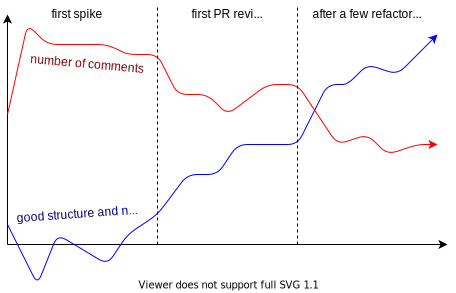

You should write comments
Comments are one of these topics that we seem to never agree on (stackoverflow says so). I often hear that comments add noise to the code and that comments never get properly updated.
The solution seems to be to properly self-document code. And I love Go for that; one of the Go proverbs even says:
Clear is better than clever.
It is true that Go favors easy-to-read code rather than smart-but-hard-to-parse code, which really helps to keep the level of comments low. But there are still many reasons comments are still needed.
Fighting tribal knowledge
Excellent naming and structure cannot help with the “why” of a piece of code. Complex math operations is a typical example of code that needs to be thougouly commented. Teams want to keep the amount of “tribal knowledge” as low as possible, and the only way in this kind of situation is to write comments. Take a look at this for example.
Good naming takes time
Finding a good name that properly carries the exact intent and help self-documenting takes time. It always takes a few iterations before the code becomes self-documenting enough to be able to remove comments.

As shown by the diagram, the amount of comments for a given codebase decreases thanks to PR reviews and refactorings. The more we learn and understand our codebase, the better we become at self-documenting.
Comments are disposable, don’t copy them over
Now, let’s talk about the issue of comments becoming outdated. Over time, comments start lying. That’s where my second point comes into play: deleting and rewriting comments is part of our job. I would even say that it takes around 40% of my time spent coding.
During code reviews, I pay extra attention to these comments. And yes, very often, comments don’t make sense anymore because of some copy-paste of code. We must delete any copy-pasted comment and rewrite it. Spreading copy-pasted comments that we don’t really know why they were added in the first place is a plague.
As a final word, I want us to remember that yes, maintaining comments is a pain. Comments will eventually start lying if you don’t delete and rewrite them. But would you rather have no comments at all and let the amount of tribal knowledge creep in every part of your codebase, making it harder and harder for new engineers to join the team?
I think we all enjoy reading good comments. Well commented code is an art. Some projects like HAProxy, Git or the Linux kernel have done an amazing job at keeping knowledge accessible as opposed to knowledge locked in and scattered across many brains. Just take a look at ebtree/ebtree.h (HAProxy), unpack-trees.c (Git) and kernel/sched/core.c (Linux kernel). Absolute delights.